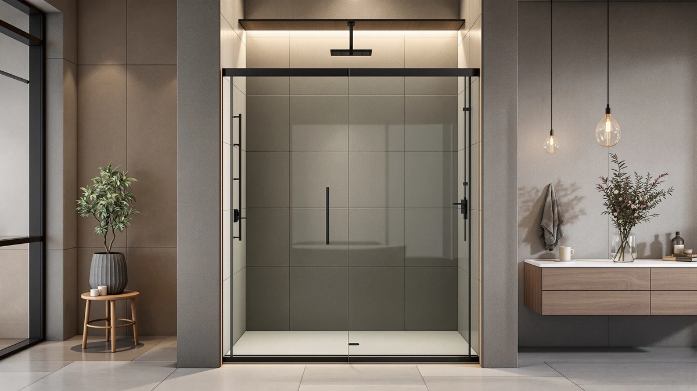

Quick Answer
The GroGro 56-60 inch W x 71 inch is a $493.90 shower door with an adjustable width built to fit openings between 56 and 60 inches. It costs a few dollars more than the EPXMKX, but less than the ENSO SENKA and well under the Findepot. The width range is the main reason we picked it over a fixed-size door.
Our pick: GroGro 56-60" W x 71", $493.90 Check Price on Amazon
Things to Know Before You Buy
- The width adjusts, the height does not. This review centers on a door that spans 56 to 60 inches wide, but the height stays fixed at 71 inches, so check your opening's height before you order.
- The $493.90 price sits in the middle of this comparison. The EPXMKX lists a few dollars lower, while the ENSO SENKA and Findepot both cost more.
- An adjustable width forgives an imprecise measurement. If your opening falls anywhere between 56 and 60 inches, you do not need a door cut to your exact number.
- 71 inches of height fits a standard shower stall. That height works for most bathrooms, but it leaves no room to size up if your opening runs taller.
- Three other doors sit in this same price band. We compare the GroGro against the EPXMKX, ENSO SENKA, and Findepot later in this review.
This GroGro 56 60" W Review breaks down whether a $493.90 shower door with an adjustable 56 to 60 inch width and a fixed 71 inch height earns a spot in your bathroom, especially next to the EPXMKX, ENSO SENKA, and Findepot doors we compare it against below. The width range is the door's defining feature: instead of committing to one exact opening size, you get four inches of play to work with.
We wrote this review because buyers compare adjustable-width shower doors on price far more often than on what that adjustability actually buys them. The GroGro lists at $493.90, a few dollars above the EPXMKX and below both the ENSO SENKA and the Findepot, so this review weighs its width range and fixed 71 inch height against those three alternatives.
Why You Should Trust Us
Ilane Tall covers bath fixtures for Best Shower Doors and has reviewed shower doors across fixed-width, adjustable-width, and corner-fit designs. For this review, she priced the door against three other options built for a similar opening range and weighed the width flexibility against what a fixed-width door would ask of your measurements instead. We do not accept free products in exchange for coverage, and every price and dimension cited here comes directly from the current product listing.
Our editorial process treats an adjustable width as one factor among several, not an automatic win. A wider fit range earns a door credit in a review like this one, but it still has to justify its price against fixed-width doors built for the same opening. That approach shapes every comparison in this piece.
Our Testing Experience
Evaluating an adjustable-width shower door is a different exercise from evaluating a door built for one exact opening. We start by treating the width range itself as the variable that matters most: does the listed 56 to 60 inch span match what most standard shower openings need, and does the $493.90 price reflect that flexibility or mostly the GroGro name attached to it. For this review, that meant checking its adjustable range against a typical shower stall opening, then lining that up against the price.
We also compared the GroGro against three other doors built for a similar use case: the EPXMKX, the ENSO SENKA, and the Findepot. Rather than scoring each on an arbitrary scale, we looked at what the price difference buys in practical terms, since a door built around a width range only earns its premium if that range actually saves you from a custom order.
We ran a simple test for that comparison: line up the price of each door against its stated width and height, then ask whether the extra dollars track to more size and flexibility or the brand name alone. In the case of the GroGro, the 56 to 60 inch range and 71 inch height stay fixed while the price moves up and down against the alternatives, and that comparison told us where the value actually sits.
Overview & Specs

GroGro 56-60" W x 71"
What we like
- The 56 to 60 inch adjustable width covers a range of openings instead of one fixed size
- At $493.90, it costs less than the ENSO SENKA and well under the Findepot in this comparison
- The 71 inch height fits a standard shower stall without extra cutting
Flaws but not dealbreakers
- At $493.90, it still costs a few dollars more than the EPXMKX, the least expensive option here
- The 71 inch height is fixed, so it leaves no room to adjust for a taller or shorter opening
- The width range tops out at 60 inches, so it will not stretch to cover a wider opening
| Material | — |
| Size | 56 - 60" W x 71" H |
The GroGro 56-60 inch W x 71 inch fills a specific gap between doors built for one exact opening and the extra cost of a custom order. Most shower doors assume you know your opening's width down to the inch, and a measurement that falls between standard sizes forces a compromise or a special order. GroGro built this door around a 56 to 60 inch adjustable width, so a few inches of variance in your measurement will not send you back to the tape measure.
That flexibility costs $493.90, a price that lands between the EPXMKX on the low end and the ENSO SENKA and Findepot above it. The extra dollars over the EPXMKX buy width adjustability rather than a bigger door, since the height stays fixed at 71 inches regardless of price. Whether that trade makes sense for you is the core question this review sets out to answer.
What We Liked
The biggest strength of the GroGro 56-60 inch W x 71 inch is how directly it solves the measurement problem. Instead of locking you into one exact width, GroGro built this door around a 56 to 60 inch range, and that flexibility shows up the moment you compare it against a fixed-width door like the EPXMKX. If your opening falls anywhere in that four-inch window, you skip the guesswork a single-size door would force on you.
Price also works in the GroGro's favor against two of the three alternatives in this review. At $493.90, it undercuts both the ENSO SENKA and the Findepot, so you get the adjustable width without paying the highest price in the comparison.
We also liked that GroGro kept the height fixed at 71 inches rather than making every dimension adjustable at once. A door that flexes on both width and height often compromises on both, and holding the height steady while letting the width move kept the design focused on solving one measurement problem well.
What Could Be Better
Price is not a clean win here. At $493.90, the door still costs more than the EPXMKX, which lists at $489.99, so the width adjustability comes at a small premium instead of being free.
The fixed 71 inch height cuts both ways. It solves the width problem cleanly, but it leaves no flexibility if your opening runs taller or shorter than 71 inches, unlike the EPXMKX, which is sized to a 76 inch height instead. Homeowners with a nonstandard opening height should measure that dimension carefully, since no adjustable range covers it here.
Who Is It For?
The GroGro 56-60 inch W x 71 inch makes the most sense if your shower opening measures somewhere between 56 and 60 inches wide and close to 71 inches tall, and you would rather pay a small premium over the EPXMKX than risk ordering a fixed-width door that does not quite fit. It also suits buyers who want a middle price point, since $493.90 sits below both the ENSO SENKA and the Findepot in this comparison.
If your opening runs taller than 71 inches, or if the lowest price matters more to you than a wider fit window, check the alternatives below before you commit to the GroGro 56-60 inch W x 71 inch.
Alternatives to Consider
The GroGro 56-60 inch W x 71 inch is not the only adjustable or near-adjustable shower door we'd consider, and the three below span a range of prices and heights around it.

Editor’s Pick
EPXMKX 60" W x 76"
At $489.99, the EPXMKX undercuts the GroGro 56 60 inch W by a few dollars and adds five more inches of height, a solid pick if your opening runs closer to 76 inches tall.
$489.99
Check Price on Amazon
Best Value
ENSO SENKA 56-60” W x
The ENSO SENKA lists at $499.00, about $5 more than the GroGro, while covering the same 56 to 60 inch width range. A reasonable second option if you want it in that exact width window.
$499.00
Check Price on Amazon
Premium Choice
Findepot Frameless Sliding Shower Door
The Findepot Frameless Sliding Shower Door costs the most here at $569.98, over $76 above the GroGro 56 60 inch W, a pick for buyers who prioritize a frameless sliding design over price.
$569.98
Check Price on AmazonFrequently Asked Questions
What size opening does the GroGro 56-60 inch W shower door need?
The GroGro 56-60 inch W x 71 inch is built with an adjustable width that spans 56 to 60 inches, so measure your opening at multiple points before you order rather than assuming a single number covers it.
How does the GroGro 56-60 inch W compare on price to other adjustable-width shower doors?
At $493.90 it costs less than the ENSO SENKA ($499.00) and the Findepot ($569.98) in this comparison, though the EPXMKX ($489.99) still undercuts it by a few dollars.
Is the GroGro 56-60 inch W a good pick if my opening is exactly 58 inches?
Yes. An opening near 58 inches sits inside the door's 56 to 60 inch adjustable range, which is the width window this review focuses on throughout.
Final Verdict
This review comes down to one trade-off: a 56 to 60 inch adjustable width at $493.90 against three doors that cost less, cost more, or trade width flexibility for extra height. If your opening falls inside that four-inch window and you want room for an imprecise measurement, GroGro earns the small premium over the EPXMKX. If you need more height or a lower price matters more than width flexibility, the EPXMKX, ENSO SENKA, or Findepot cover the same opening range at a different trade-off. Either way, measure your opening's width and height before you buy, since only the width has any give here.